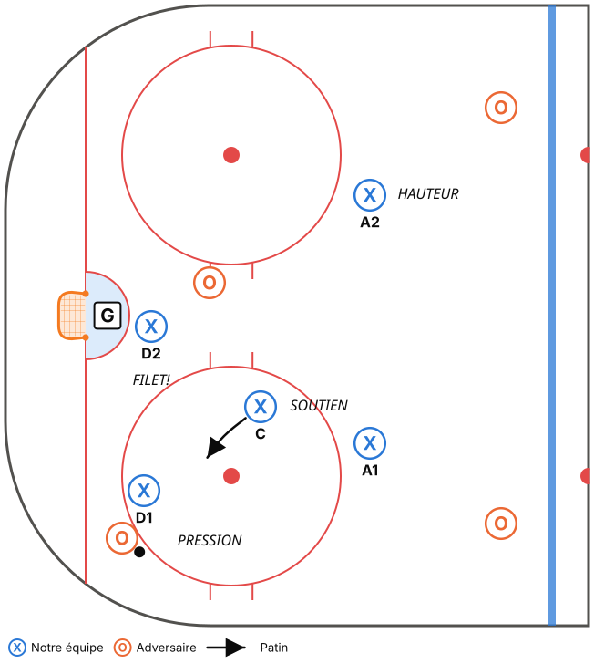
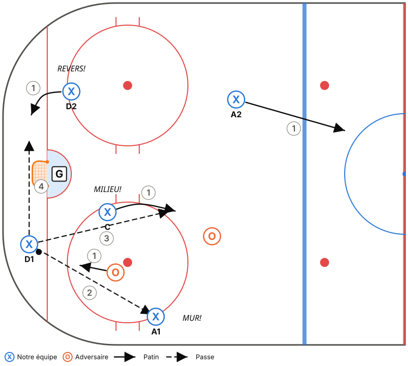
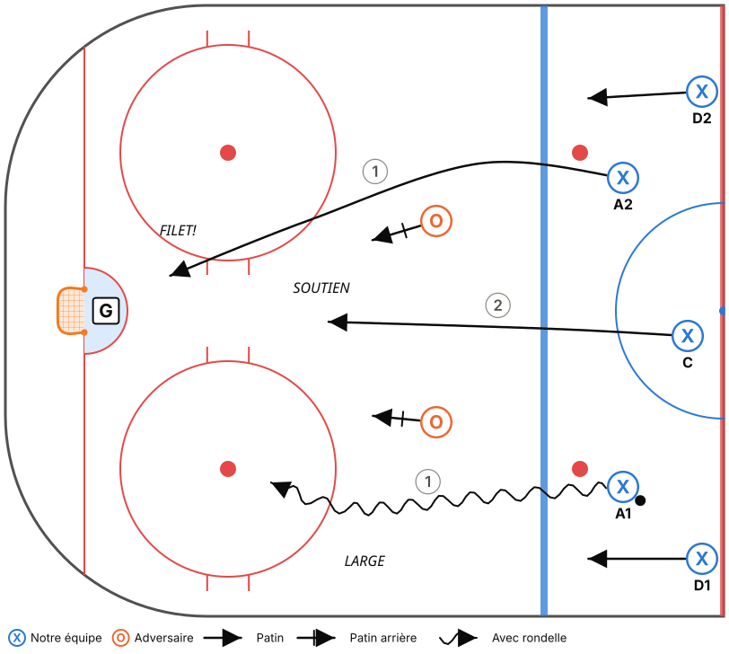
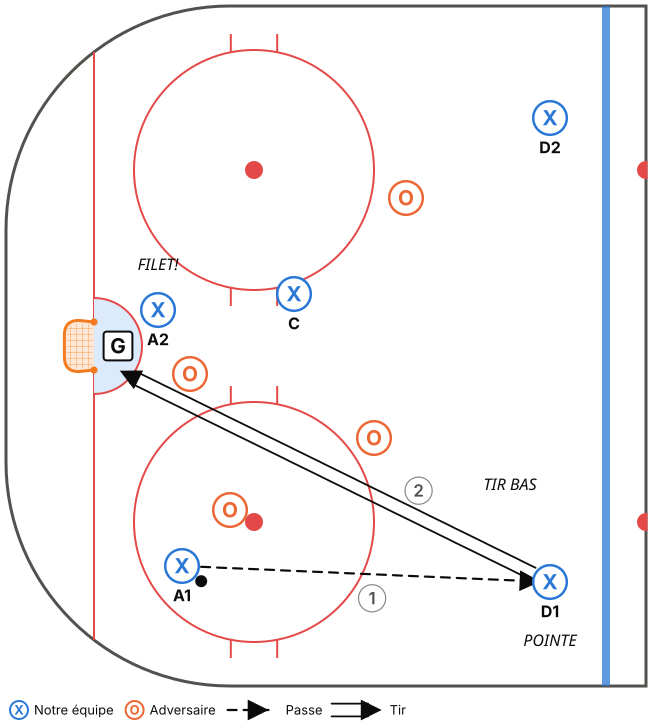
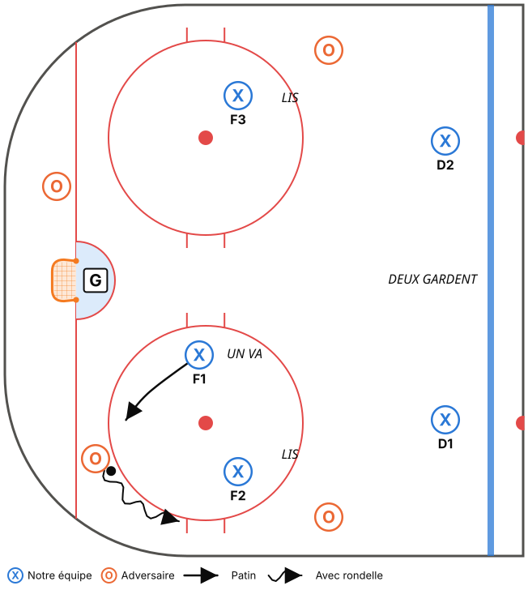
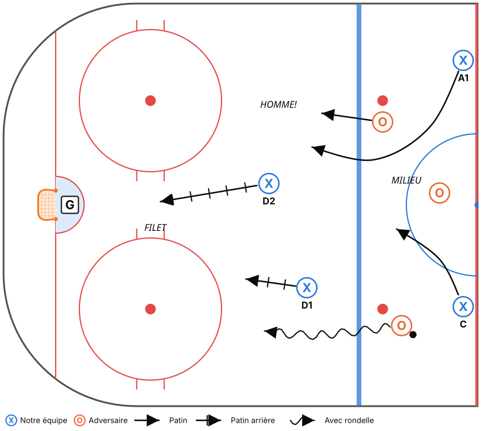
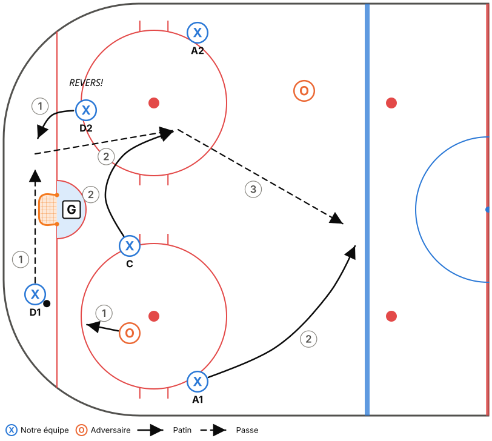
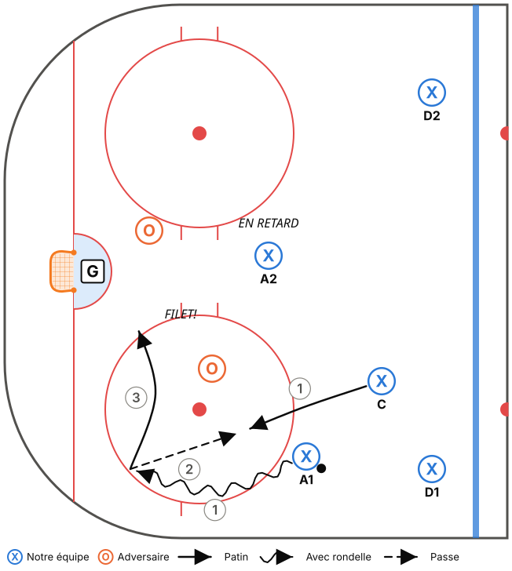
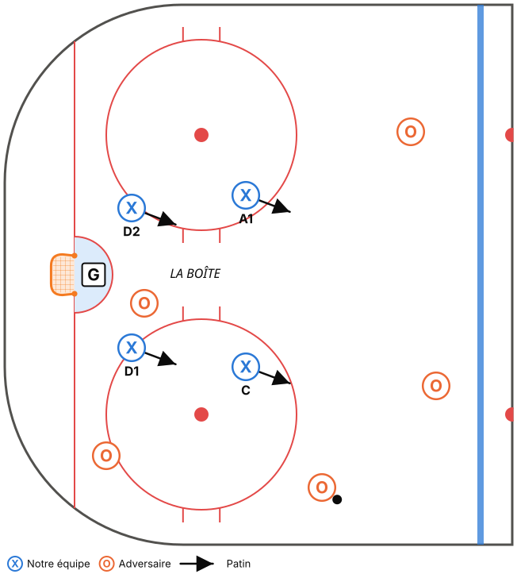

Philosophie
Les joueurs ont déjà une bonne technique. Ce qui leur manque, c'est savoir quoi faire avec. Le système sert donc à apprendre à lire le jeu, pas à placer des pions.
- Des principes plutôt que des positions fixes. En phase 1, chaque joueur a un rôle précis pour sécuriser la cohésion. On passe ensuite à des rôles selon la proximité (« le plus près va »), ce qui oblige à lire le jeu.
- 3 mots par situation. Chaque situation de jeu tient en 3 mots-clés que les joueurs crient sur la glace. Si un joueur de 10 ans ne peut pas l'expliquer en 10 secondes, c'est trop compliqué.
- Poser des questions plutôt que donner des réponses. Au banc et en pratique : « Qu'est-ce que tu as vu? Quelle autre option tu avais? »
Rappel M11 : la mise en échec corporelle est interdite. On enseigne l'angle, le bâton sur la glace et le contact de positionnement (se placer entre l'adversaire et le filet).
Vocabulaire commun (à afficher dans le vestiaire)
| Mot-clé | Qui le crie | Signification |
|---|---|---|
| MUR! | Ailier sur la bande | « Je suis ton option sur la bande. » |
| MILIEU! | Centre en soutien | « Je suis au centre, passe-moi. » |
| REVERS! | Défenseur opposé | « Envoie-la de l'autre côté / derrière. » |
| TEMPS! | N'importe qui | « Personne sur toi, prends ton temps. » |
| HOMME! | N'importe qui | « Pression, joue vite! » |
| FILET! | Joueur devant le filet | « Je suis au filet, tire ou passe-moi. » |
| J'Y VAIS! | Joueur qui fait pression | « Je prends le porteur. » (phase 2) |
| JE COUVRE! | Joueur qui remplace | « Je prends ta place. » (phase 2-3) |
PHASE 1 – Les fondations (fin sept. à fin nov.)
Objectif : tout le monde sait où aller dans les 5 situations de base.
1. Zone défensive : « PRESSION – SOUTIEN – FILET »

| Joueur | Rôle | Règle simple |
|---|---|---|
| D1 (côté rondelle) | PRESSION | Corps entre le porteur et le filet, bâton sur la palette. |
| C | SOUTIEN | Aide D1 et récupère la rondelle libre. Ne dépasse jamais le filet vers le côté faible. |
| D2 | FILET | Devant le filet, surveille le joueur le plus dangereux, bâton sur la glace. |
| Ailiers | HAUTEUR | Entre la pointe et l'enclave. On regarde la rondelle ET son joueur (« tête sur un pivot »). |
Règle d'or : quand on récupère la rondelle, les ailiers partent au mur (sortie de zone).
2. Sortie de zone : « MUR – MILIEU – REVERS »

- D1 : récupère la rondelle.
- A1 (MUR) : dos à la bande, à la hauteur des hachures.
- C (MILIEU) : bas, au centre, en mouvement.
- D2 (REVERS) : de l'autre côté du filet.
- A2 : au milieu, en haut de la zone.
- D1 regarde par-dessus son épaule avant d'arriver à la rondelle.
- Il écoute et choisit entre MUR (ailier), MILIEU (centre) et REVERS (D2 de l'autre côté).
- Personne libre? On envoie la rondelle le long de la bande ou sur la vitre. Jamais de passe au milieu de notre enclave.
- Après la passe, tout le monde monte ensemble (5 joueurs dans 2 zones).
3. Attaque et entrée de zone : « LARGE – FILET – SOUTIEN »

- Le porteur entre en vitesse (en largeur si un D l'attend).
- Le 2e avant va au filet (toujours!).
- Le 3e avant arrive en retard, au haut de l'enclave (soutien et rebond).
- Les D montent jusqu'à la ligne rouge, puis gardent la ligne bleue offensive.
Lecture 2 contre 1 (introduite dès la phase 1) : « Fais choisir le défenseur. » S'il prend le porteur, on passe. S'il prend la passe, on tire ou on va au filet.
4. Zone offensive : « TIRE – FILET – POINTE »

- Il y a toujours un joueur devant le filet.
- Si tu n'as pas d'ouverture, remets la rondelle à la pointe (D), qui tire bas.
- Tous les tirs doivent rester bas, pour créer des rebonds.
5. Échec avant 1-2-2 : « UN VA, DEUX LISENT, DEUX GARDENT »

- F1 force le porteur vers la bande, jamais vers le milieu.
- F2 / F3 interceptent la passe le long de la bande de leur côté.
- D1 / D2 gardent la ligne bleue. En cas de doute, on recule.
6. Repli défensif : « MILIEU – HOMME – FILET »

- Les avants reviennent par le milieu de la patinoire (pas le long de la bande).
- Ils prennent un joueur sans rondelle et restent entre lui et notre filet.
- Les D s'occupent du porteur (écart de 2 bâtons, bâton sur la glace).
Critères pour passer à la phase 2
- [ ] Sur un 5c0 dicté par le coach, tout le monde prend la bonne position en moins de 3 secondes.
- [ ] En match, on réussit au moins 6 sorties de zone sur 10 sans perdre la rondelle dans notre enclave.
- [ ] On entend les mots-clés sur la glace sans avoir à les demander.
- [ ] Les avants reviennent par le milieu en repli.
PHASE 2 – Lire et échanger (déc. à fin jan.)
Objectif : passer des positions fixes aux rôles selon la proximité. C'est ici qu'on développe vraiment le hockey IQ.
Zone défensive : « LE PLUS PRÈS VA »
- Le joueur le plus près du porteur fait la PRESSION, qu'il soit D ou avant.
- Le 2e plus près fait le SOUTIEN, le 3e prend le FILET.
- Les 2 autres montent en HAUTEUR.
- Communication obligatoire : « J'Y VAIS! » / « JE COUVRE! ».
Sortie de zone : ajout du changement de côté

- D1 → D2 derrière le filet (« REVERS! ») quand la pression vient du côté fort.
- Le centre fait une courbe pour recevoir la passe en mouvement (au lieu d'attendre immobile).
- L'ailier du côté faible coupe au centre, à la ligne bleue, pour recevoir une passe d'étirement.
Attaque : lecture 3 contre 2 et cycle simple

- 3c2 en triangle : le porteur, un joueur au filet et un joueur en retard. « Qui est libre? »
- Passe et va : après une passe, on se déplace vers une ouverture. On ne reste jamais immobile.
- Cycle simple : le porteur descend dans le coin, remet la rondelle au joueur qui le suit, puis va au filet.
Échec avant : 1-2-2 avec réaction
- Si F1 arrive en premier dans le coin et que l'adversaire est pris, F2 embarque (« J'Y VAIS! »). F3 prend le milieu.
Unités spéciales (introduction)

- Désavantage numérique : la boîte. 4 joueurs en carré, bâtons dans les lignes de passe, on se déplace ensemble vers la rondelle.
- Avantage numérique : 1 au filet et 2 tireurs. Rondelle à la pointe, tir bas, un écran devant le gardien et un joueur aux rebonds.
Critères pour passer à la phase 3
- [ ] En zone défensive, un avant et un D échangent leurs rôles sans confusion (au moins 1 fois par match).
- [ ] Sur un 2c1 ou 3c2 en pratique, le porteur fait le bon choix au moins 7 fois sur 10.
- [ ] Les joueurs expliquent au banc ce qu'ils ont vu (« le D l'a pris, j'aurais dû passer »).
PHASE 3 – Autonomie (fév. à mars)
Objectif : les joueurs ajustent eux-mêmes leur jeu pendant le match.
- Couvrir un D qui monte : si un défenseur plonge dans la zone offensive, l'avant le plus haut prend sa place à la pointe (« JE COUVRE! »).
- Lire l'adversaire : entre deux périodes, on demande aux joueurs : « Par où sortent-ils de leur zone? Quel joueur est dangereux? »
- Gestion de match : quand on mène en fin de match, rondelle profonde et aucun risque à la ligne bleue. Quand on tire de l'arrière, échec avant plus agressif.
- Transition rapide : dès qu'on récupère la rondelle, les ailiers cherchent la profondeur (contre-attaque).
Comment enseigner chaque nouvelle notion (même séquence à chaque fois)
- Tableau (vestiaire, 3 min max) : dessine la situation, dis les 3 mots-clés et pose une seule question.
- 5c0 au ralenti : les joueurs marchent le système sur la glace. Le coach déplace la rondelle, les joueurs réagissent.
- 5c0 à vitesse réelle.
- Opposition passive (bâton à l'envers ou 50 % de l'intensité).
- Opposition réelle en situation (2c1, 3c2, 5c5 en zone).
- Petit jeu à règle qui récompense le principe (ex. : un but compte double après une sortie réussie par MUR-MILIEU-REVERS).
Les notions de la banque d'exercices marquées Système M11 – Phase X suivent cette séquence.
Enseigner le système en demi-glace
Tout le système s'enseigne dans une seule zone et la zone neutre jusqu'à la ligne rouge :
| Situation | Comment la faire en demi-glace |
|---|---|
| Zone défensive, zone offensive, échec avant | Dans la zone, telle quelle. |
| Sortie de zone | Réussie quand la rondelle franchit la ligne rouge. Les 5 font ensuite un virage et attaquent le même filet. |
| Attaque / entrée de zone | Départ à la ligne rouge ou après un virage autour du demi-cercle central. |
| Repli | Les attaquants et les joueurs en repli partent de la ligne rouge, les joueurs en repli 2-3 m derrière. |
| Transition | Règle « on ressort » : après une récupération, il faut ressortir la rondelle au-delà de la ligne bleue avant d'attaquer. |
Ce qui manque en demi-glace, c'est la vitesse et la distance de la pleine glace (longues remontées, repli de 60 m). Les matchs servent donc de laboratoire : un objectif de match par semaine et, si possible, un parent qui filme.